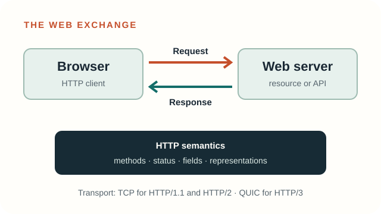

A short history of web communication
HTTP: from a text command to modern web transport
The web keeps changing. Its core conversation is still familiar: a client asks for a resource, and a server answers with a status, fields, and content.
Follow the timeline Or take the 10-minute self-assessment
Introduction
What this project explains
HTTP (Hypertext Transfer Protocol) is an application protocol used by browsers, servers, APIs, and intermediaries. The first web exchanges were small. Today, a page can trigger many requests for markup, styles, scripts, images, fonts, and data.
This project follows the changes that helped HTTP serve a larger, more interactive, and more secure web. It compares the versions while keeping their shared meaning in view: methods, status codes, header fields, and representations. RFC 9110 defines the current core semantics.
Key terms
A few words to know
- ClientThe program that sends a request.
- ServerThe program that handles a request.
- MethodThe action a request asks to perform.
- StatusA code describing the response result.
- Header fieldMetadata that travels with a message.
- RepresentationA form of a resource, such as HTML or JSON.
Table of contents
Explore the project
HTTP foundations
How requests, responses, and shared semantics fit together.
02HTTP’s evolution
From HTTP/0.9 through HTTP/1.1 and the problems that came next.
03HTTP/2
Binary frames, concurrent streams, and header compression.
04HTTP/3
How QUIC changes transport while HTTP keeps its semantics.
05Key concepts
Methods, status codes, fields, caching, state, and security.
06References
Standards and resources used to prepare this research draft.